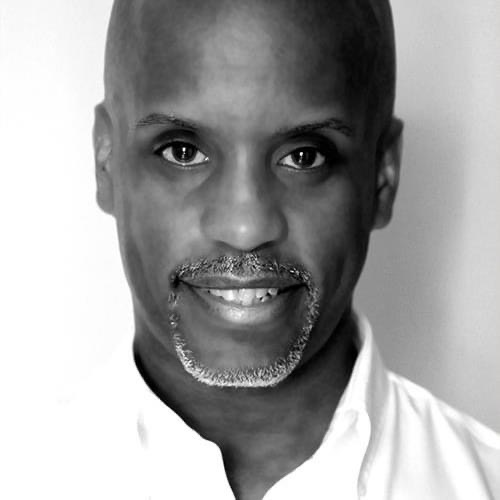

<!doctype html>
<html lang="en">
  <head>
    <title>Home Page</title>
    <!-- Required meta tags -->
    <meta charset="utf-8">
    <meta name="viewport" content="width=device-width, initial-scale=1, shrink-to-fit=no">

    <!-- Bootstrap CSS -->
    <link rel="stylesheet" href="https://stackpath.bootstrapcdn.com/bootstrap/4.3.1/css/bootstrap.min.css" integrity="sha384-ggOyR0iXCbMQv3Xipma34MD+dH/1fQ784/j6cY/iJTQUOhcWr7x9JvoRxT2MZw1T" crossorigin="anonymous">
  </head>
  <body>
      
    <!-- Optional JavaScript -->
    <!-- jQuery first, then Popper.js, then Bootstrap JS -->
    <script src="https://code.jquery.com/jquery-3.3.1.slim.min.js" integrity="sha384-q8i/X+965DzO0rT7abK41JStQIAqVgRVzpbzo5smXKp4YfRvH+8abtTE1Pi6jizo" crossorigin="anonymous"></script>
    <script src="https://cdnjs.cloudflare.com/ajax/libs/popper.js/1.14.7/umd/popper.min.js" integrity="sha384-UO2eT0CpHqdSJQ6hJty5KVphtPhzWj9WO1clHTMGa3JDZwrnQq4sF86dIHNDz0W1" crossorigin="anonymous"></script>
    <script src="https://stackpath.bootstrapcdn.com/bootstrap/4.3.1/js/bootstrap.min.js" integrity="sha384-JjSmVgyd0p3pXB1rRibZUAYoIIy6OrQ6VrjIEaFf/nJGzIxFDsf4x0xIM+B07jRM" crossorigin="anonymous"></script>
  </body>
</html>

  <link rel="stylesheet" type="text/css" href="Students.css">
</head>
<body>

  <!--Nav Bar -->
  <nav class="navbar navbar-expand-sm bg-dark navbar-dark">
    <!-- Brand -->
    <a class="navbar-brand" href="#">
    
  </a>
  
    <!-- Links -->
    <ul class="navbar-nav">
      <li class="nav-item">
        <a class="nav-link" href="Index.html">Home</a>
      </li>
      <li class="nav-item">
        <a class="nav-link" href="Gallery.html">Gallery(2023)</a>
        <a class="nav-link" href="Gallery2022.html">Gallery(2022)</a>
      </li>
  
      <!-- Dropdown -->
      <li class="nav-item dropdown">
        <a class="nav-link dropdown-toggle" href="#" id="navbardrop" data-toggle="dropdown">
          The Summer Camp Year
        </a>
        <div class="dropdown-menu">
          <a class="dropdown-item" href="Students2022.html"> Campers 2022</a>
          <a class="dropdown-item" href="Students2023.html"> Campers 2023</a>
          <a class="dropdown-item" href="video.html">Music Videos</a>
          <a class="dropdown-item" href="Speakers.html">Speakers</a>
         
        </div>
      </li>
    </ul>
  </nav>
  <style>
    body {
      font-family: Arial, sans-serif;
      margin: 0;
      padding: 0;
      background-color: #f4f4f4;
    }
  
    .header {
      background-color: #333;
      color: #ffffff;
      text-align: center;
      padding: 1rem 0;
    }
  
    .container {
      max-width: 1200px;
      margin: 0 auto;
      padding: 2rem;
    }
  
    .speaker {
      display: flex;
      align-items: center;
      padding: 1rem;
      border-bottom: 1px solid #cccccc;
    }
  
    .speaker img {
      width: 100px;
      height: 100px;
      border-radius: 50%;
      margin-right: 1rem;
    }
  
    .speaker-info {
      flex: 1;
    }
  
    .speaker-name {
      font-size: 1.2rem;
      font-weight: bold;
      margin-bottom: 0.5rem;
    }
  
    .speaker-title {
      font-size: 1rem;
      color: #777;
      margin-bottom: 0.5rem;
    }
  
    .speaker-bio {
      font-size: 1rem;
    }
  </style>
  <title>Guest Speakers </title>
  </head>
  <body>
    <div class="header">
      <h2>Featured Speakers</h2>
    </div>
    <div class="container">
      <div class="speaker">
        
        <div class="speaker-info">
          <div class="speaker-name">Malik Wilson</div>
          <div class="speaker-title">NBC Affilifate/ News Caster</div>
          <div class="speaker-bio">
             Malik Co-Hosts Award-Winning and #1 St. Louis lifestyle/entertainment show  Show Me St. Louis.Malik joined the Television/Radio industry in 2014 when he was only a freshman at North Carolina A&T State University in Greensboro, NC. He worked with his school radio station where he learned a ton of insight within the radio business.
             Later in 2016, Malik took his talents off campus and to the heart of downtown Greensboro earning a gig with 107.5 KZL FM radio station. There, he helped brainstorm and produce the Jared and Katie in the Morning live talk show, making an appearance or two as a guest host during a handful of shows.
             Before graduating in 2018, Malik got a taste of television work earning yet another gig with WLXI TV - The Christian Television (TCT) Network. Malik worked as a studio floor director and producer learning more than any classroom could teach him about live television and operations.
             Malik now works full time as the Co-Host/Correspondent for 'Show Me St Louis' - a Television Lifestyle/Entertainment show on NBC highlighting the latest hotspots, locals, and celebrities. As well as dig into trends in beauty, fashion, food and entertainment.
             He's also an actor, model, producer, content creator, community advocate, and a plethora of other things!
             Fun Facts: 
             - Malik played in the Canadian Football League (CFL) as a Wide-receiver and Kick-Return Specialist.
             - Malik was a Division-1 All-American athlete while at NC A&T State University.
             - Malik is also a 2018 initiate of Kappa Alpha Psi Fraternity Inc.
          </div>
        </div>
      </div>
      <div class="speaker">
        
        <div class="speaker-info">
          <div class="speaker-name">Kevin Bryant </div>
          <div class="speaker-title">CEO of Converstions Global  Marketing </div>
          <div class="speaker-bio">
            Among some of the emerging commercial real estate developers in the region, Kevin Bryant is making his mark by establishing and nurturing critical business relationships with some of the St. Louis area’s most prolific companies and individuals.
            the Kingsway Development LLC and CEO of
            Kevin
            BryantHe is the executive founder and developer of
            Conversions Global Marketing. Kevin is a tactical decision-maker with a keen eye for creative problem solving and
            diplomatic negotiating.
            Throughout his tenured career, he has earned a reputation as the trusted go-to; one renowned for his ability to call on his core competencies of advertising, design, journalism, marketing, promotions, and digital communication to deliver measurable results with impeccable efficiency.
            As an accomplished communications professional with expertise in strategic planning and project management for leading organizations, Kevin has shepherded projects for the likes of Monsanto Corp., Anheuser-Busch, Jones Lang LaSalle, Diadora, Grace Hill Health Centers, Harris-Stowe State University, and Family & Workforce Centers of America.
            More recently while serving as the leading Community and Building Developer in the Kingsway/Central West End corridor, Kevin has retained Master Development rights for 207 acres of the Kingsway District and is overseeing the multi-million-dollar business and community development project in St. Louis’ Central West End. He is well-positioned to drive economic development in the district through a core focus on revitalizing vacant/underutilized properties.
            In addition to real estate, Kevin has negotiated tax credit programs and established the fully operating Kingsway Redevelopment Plan (with exclusive rights for the next 10 years) - in partnership with the St. Louis Development Corp., a plan that includes initiating corporate expansion opportunities and supporting upwardly mobile housing developments.
             
             Redeveloping our communities is more than brick and mortar, It's people and dreams.
             With experience gained through working with the Collective Work Foundation (CWF) to support the philanthropic needs of the Kingsway Redevelopment plan, Kevin leveraged relationships and brokered partnerships with the Fountain Park and Lewis Place neighborhood organizations to combat problems of urban blight. He oversaw the strategic management and authorizing of capital budgets, business agreements, and competitive bidding for sub-contracting for CWF and a cache of small to medium businesses.
            Kevin’s experience encompasses a cross-section of project types and sizes. Relying on an acute sense for equitable development; he has created a myriad of exciting projects including Elevation Workspace, a $6.2 million mixed-use office building dedicated to the growth of entrepreneurs, Euclid Gardens Senior Living– the adaptive re-use of a 35,000 sq ft abandoned school, and The Bridge Apartments– ground up construction of a 200 unit market rate apartment building scheduled for opening Summer 2023.
            
          </div>
        </div>
      </div>
    </div>
    <div class="container">
      <div class="speaker">
        
        <div class="speaker-info">
          <div class="speaker-name">InnerGy</div>
          <div class="speaker-title">Owner of InnerGy Enterprises LLC</div>
          <div class="speaker-bio">
            An Award-winning professionally performing Poet, Writer, Vlogger/Blogger, Documentary Journalist, Event MC, TV Broadcast Host, Radio & Podcast Personality, Executive Producer, Event Coordinator, and Creative Consultant and Advisor.
          </div>
        </div>
      </div>
      <div class="speaker">
        
        <div class="speaker-info">
          <div class="speaker-name">Benny Henderson </div>
          <div class="speaker-title">Principal Cloud Architect</div>
          <div class="speaker-bio">
           Benny Henderson is a Principal Cloud Architect at World Wide Technology 
          </div>
        </div>
      </div>
      <!--More Speakers-->
    </div>
    <div class="container">
      <div class="speaker">
        
        <div class="speaker-info">
          <div class="speaker-name">Koran Bolden</div>
          <div class="speaker-title">CEO of Bold Moves Agency</div>
          <div class="speaker-bio">
            Koran Bolden is a national youth motivational speaker, entrepreneur, youth empowerment and outreach consultant who advocates for students to graduate from school by educating them to make healthy life choices.
          </div>
        </div>
      </div>
      <div class="speaker">
        
        <div class="speaker-info">
          <div class="speaker-name">Larry Cohn </div>
          <div class="speaker-title"> Producer and Co Founder </div>
          <div class="speaker-bio">  Larry has a diverse background blending his business acumen with personal development strategies and mindset growth philosophies. He is a graduate of The Harvard Business School for Executive Education and Negotiation, Washington University in St. Louis, The University of Santa Monica for Spiritual Psychology and The Fire Walking Institute for Research and Education. He has been a small business owner since 1990 when he opened up his first restaurant in Phoenix, Arizona. He eventually grew his restaurants to include the food service operations for both The Phoenix Art Museum and The Desert Botanical Gardens. His sales grew from under $100,000 per year to over $5,000,000 per year when he sold the business. His restaurants were featured in Money Magazine, USA Today and Food and Wine. 
            Currently Larry is the co-founder and partner in NexCore, a business development and management company specializing in working with entrepreneurs and small businesses.
            
            Larry has always believed in giving back to the community and  he was awarded one of 8 grants nationwide from The Ford Foundation for over $250,000. The grant was used to collaborate with local arts organizations to develop an arts integrated education to intersect with St. Louis City Public Schools. His hobbies include adventure travel and adventure trekking, including The Pilgrimage of The Camino de Santiago de Compostela in Spain and Machu Picchu in Peru. Larry wants to help people build their businesses and their finances but he also wants to help people nurture their dreams and put life in their heart. He is also the founder of the C.O.H.N. ( Creating, Overcoming, Healing and Navigating) Academy in conjunction with the Whitfield Foundation for Success located in Fox Park. Larry is a board member of The Gateway South Development, The 7th Grade Poetry Foundation and an Advisory Board Member of Lift for Life Gym.
            
       
          </div>
        </div>
      </div>
      <div class="speaker">
        
        <div class="speaker-info">
          <div class="speaker-name"> Sag Live </div>
          <div class="speaker-title">Musical Producer </div>
          <div class="speaker-bio">
          </div>
        </div>
      </div>
      <div class="speaker">
        
        <div class="speaker-info">
          <div class="speaker-name">Anthony Stewart </div>
          <div class="speaker-title"> Videoagrper  </div>
          <div class="speaker-bio">
       
          </div>
        </div>
      </div>
      <div class="speaker">
        
        <div class="speaker-info">
          <div class="speaker-name">Racheal </div>
          <div class="speaker-title"> Artist  </div>
          <div class="speaker-bio">
       
          </div>
        </div>
      </div>
      
    </div>
  </body>
  </html>
  
